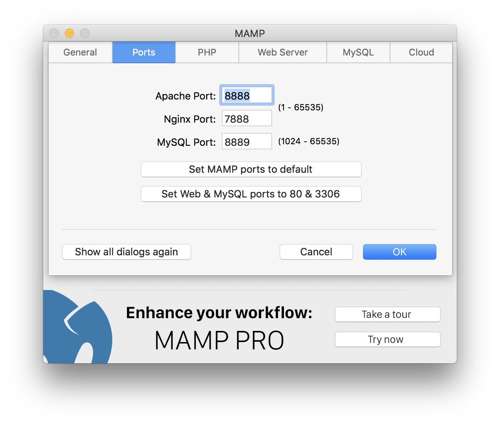
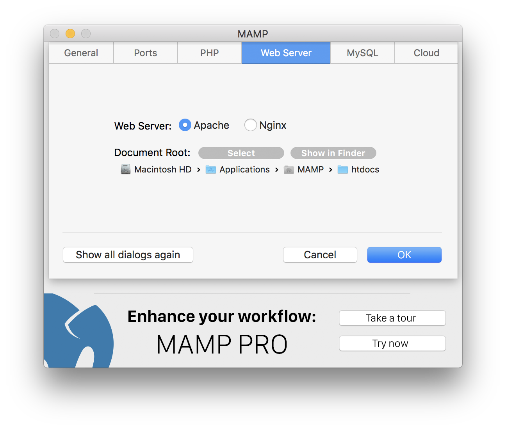
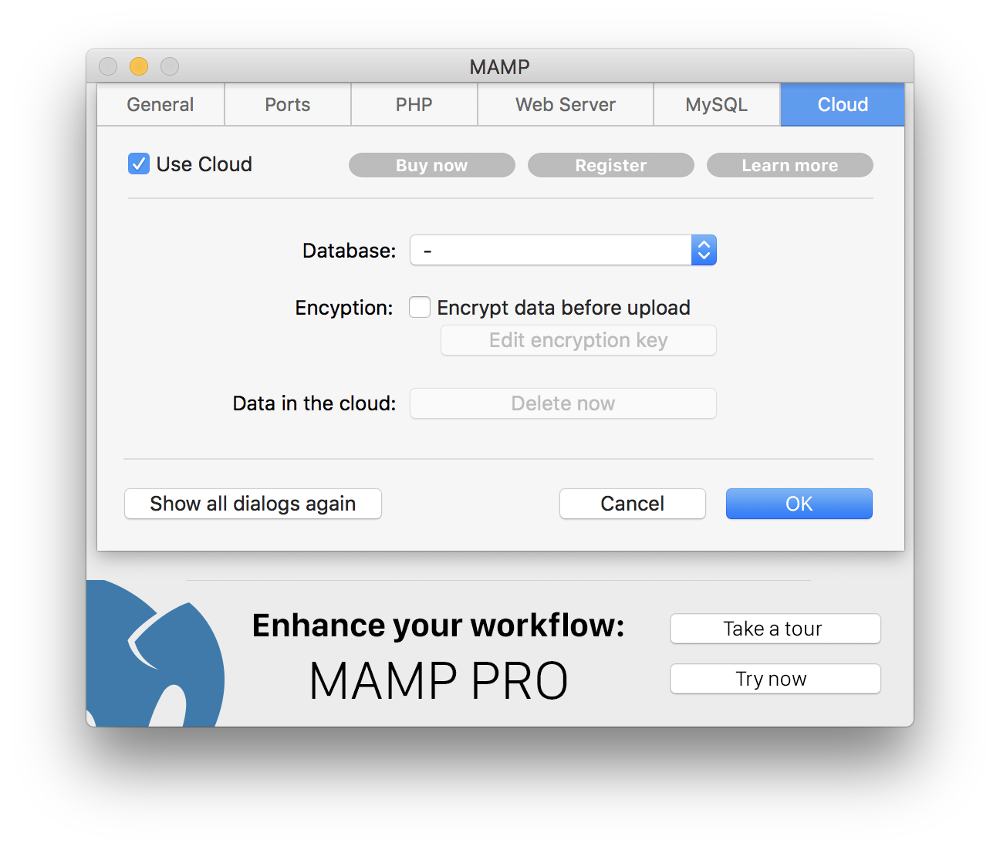

You can change them in the Ports section of the Preferences dialog:

After installting MAMP the web server uses "/Applications/MAMP/htdocs" as its so-called "document root". You can use every folder as long as you can read from and write to it. You can change the path of the document root in the Web Server section of the Preferences dialog:

The very popular cloud function of MAMP PRO is now also available in MAMP. MAMP Cloud allows you to save and load your host and your data of one database using Dropbox. You can easily save your host and database data in the cloud and later retrieve it on another Mac, or on the same Mac, when backing up data before making changes on your host.

Open the terminal and type the following:/Applications/MAMP/Library/bin/mysqladmin -u root -p password <NEWPASSWORD>
Instead of <NEWPASSWORD> use the new password you want.
Afterwards, you also need to change the password for phpMyAdmin and other scripts which are run by MAMP. You can change the password for phpMyAdmin in the file /Applications/MAMP/bin/phpMyAdmin/config.inc.php
You probably have set the Apache port to a value smaller than 1024 (see the Ports section of the Preferences dialog). On a Unix system like macOS you must have root permissions to start IP services with ports smaller than 1024.